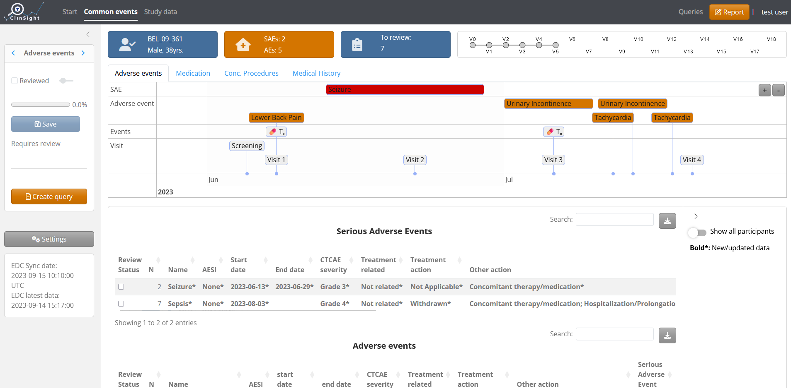
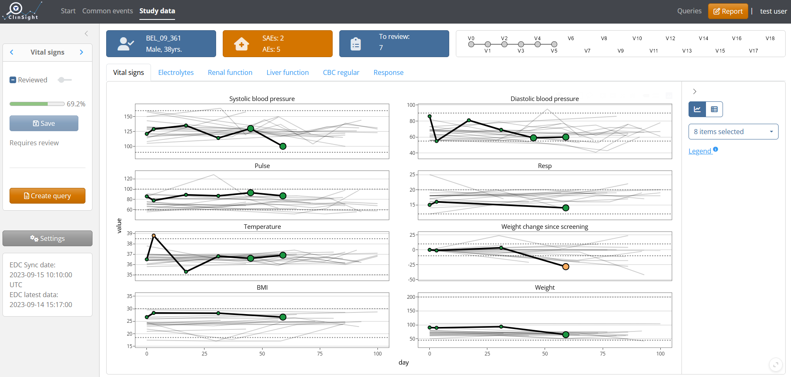
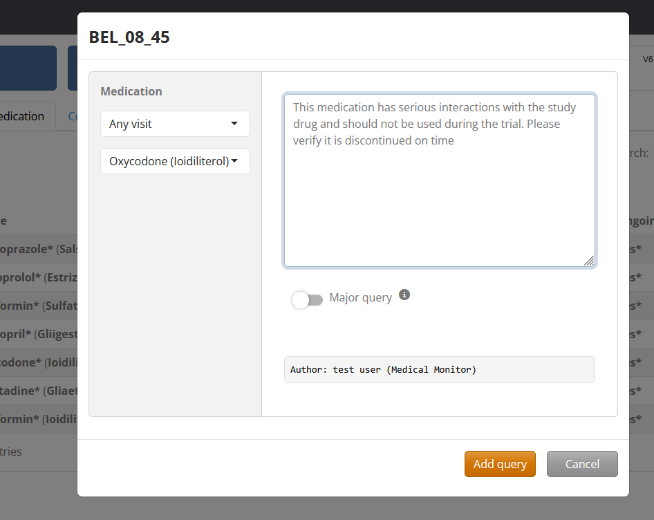
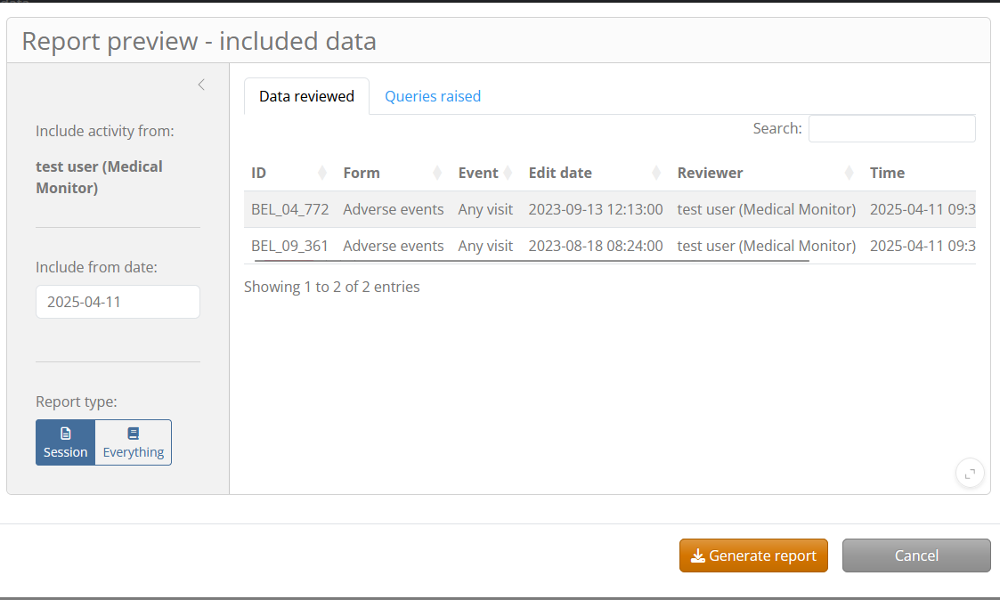

ClinSight provides a production-ready and easy-to-use application for medically monitoring patient safety and data integrity throughout clinical trials. The application provides a smart review platform and interactive visualizations, creating an efficient patient overview that usually cannot be achieved through native ‘Electronic Data Capture’ (EDC) interfaces.
Primary Features
ClinSight contains an interactive timeline, relating clinical trial procedures & treatments with adverse events that occur with a patient.

Patient data patterns over time can be easily visualized with interactive figures, highlighting which data points are out of the normal limits, and indicating whether a data point is newly entered/changed in the EDC since the last review session.

Data can be marked as “reviewed” by row or by the entire form that is active:

The application integrates an optional “query system”, in which medical monitors can submit and track queries raised with the study site.

Detailed PDF reports can be generated that document a review session for audit purposes:

Installation
There are several ways to install ClinSight. To run the application with the R environment as intended by the developers, you can git clone the package repository, then open the project (clinsight.Rproj) and restore the project’s environment with:
renv::restore()This will install all the required packages with their intended versions. Below, renv::lockfile_read()$R shows the R version and libraries used at the time this README file was rendered. It is recommended launch the project using the same R version, otherwise errors might occur during installation.
renv::lockfile_read()$R
#> $Version
#> [1] "4.4.1"
#>
#> $Repositories
#> $Repositories$RSPM
#> [1] "https://packagemanager.posit.co/cran/2024-09-17"
#>
#> $Repositories$RSPM2
#> [1] "https://packagemanager.posit.co/cran/2025-04-01"Another option for installing clinsight is simply directly installing the latest stable version from GitHub with:
# install.packages("pak")
pak::pkg_install("openpharma/clinsight")The development version with the latest features and updates can be installed by pointing to the dev branch during installation:
pak::pkg_install("openpharma/clinsight@dev")After installation, the application can be tested with internal data using the function test_clinsight().
library(clinsight)
# Not run:
test_clinsight()Learn more
The application is easily customized to any study using a metadata file (see vignette('Metadata')), that configures how the data will be presented in the application. For more information on how to fully set up ClinSight with your organization’s data, see vignette('clinsight').